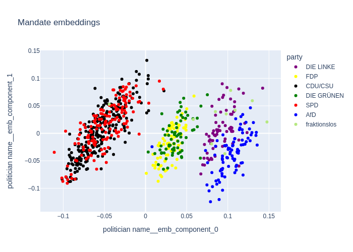

"Namentliche Abstimmungen" in the Bundestag
How do individual members of the federal German parliament (Bundestag) vote in "Namentliche Abstimmungen" (roll call votes)? How does the individual align with the different political parties? And how may the members vote on upcoming bills? All this here.
This project was created out of curiosity and purely for entertainment.
What you can find here:
- tools do to process data from the sources mentioned below
- some analysis on the voting behavior of members of parliament
- a totally serious attempt to predict votes of members of parliament in upcoming roll call votes.
Data sources
The German parliament makes roll call votes available as XLSX / XLS files (and PDFs ¯\_(ツ)_/¯ ) here: https://www.bundestag.de/parlament/plenum/abstimmung/liste.
The NGO abgeordnetenwatch provides an open API for a variety of related data. They also provide a great way of inspecting the voting behavior of members of parliament and their (non-)responses to question asked by the public.
Embedded members of parliament
As a side effect of trying to predict the vote of individual members of parliament we can obtain embeddings for each member, when using a neural net. Doing so for the 2017-2021 legislative period, we find that they cluster into governing coalition (CDU/CSU & SPD) and the opposition:

If you want to see more check out this site or this notebook.